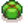

Inverno

L'Inverno è la quarta stagione in Stardew Valley. È seguita dalla Primavera e preceduta dall'Autunno.
L'inverno è unico tra le stagioni in quanto all'aperto non cresceranno colture, a parte i Semi invernali, e tutta l'Erba, le Erbacce e la maggior parte del terreno arato (inclusi tutti i fertilizzanti, anche se la casella rimane arata) saranno tutte rimosse ad inizio stagione. Anche le arnie non produrranno miele durante l'inverno. Infine, gli alberi standard, compresi quelli piantati nella fattoria (tranne gli alberi da frutto), non crescono in inverno a meno che non venga applicato Fertilizzante per alberi.
Nel complesso, con l'arresto della crescita delle piante, l'inverno può diventare una stagione difficile per gli agricoltori, lasciando solo i prodotti animali e la serra come cardine dei prodotti agricoli. Tuttavia, lo rende una stagione eccellente per altre attività, tra cui raccolta selvatica, esplorazione delle Miniere/Caverna del teschio, Pesca, scavo dei punti artefatto e fare regali: con nove compleanni, l'inverno è pari all'Estate per il maggior numero di compleanni in una stagione. Inoltre, semplifica l'ottenimento dei miglioramenti della fattoria e degli attrezzi senza influire sulle normali routine.
Gli animali richiedono cure aggiuntive durante questa stagione, poiché non possono uscire a causa del freddo. Fornire loro un calorifero li renderà anche più felici. Inoltre, a causa della mancanza di erba ed erbacce, fibra e fieno sono più difficili da ottenere all'aperto. Tuttavia la fibra può ancora essere trovata nelle miniere e nel Covo di insetti mutanti, o in alternativa coltivata con i Semi di fibra. Il fieno può essere acquistato presso il Ranch di Marnie o te lo può spedire casualmente per posta. Può anche essere ottenuto come sottoprodotto del Grano coltivato nella Serra.
Ci sono diversi eventi e festival invernali che offrono al giocatore la possibilità di acquisire oggetti unici. Uno si svolge all'inizio del mese e uno verso la fine, segnando la fine dell'anno nella Valle. A metà stagione inizia anche il Mercato notturno.
Eventi
| Krobus | Linus | Caroline | ||||||
| Festival del ghiaccio | Sebastian | Calamaride | Calamaride | Harvey | ||||
| Mercato notturno | Mercato notturno |
|
Evelyn | |||||
| Leah | Banchetto della Stella d'inverno | Clint |
Festival
|
Compleanni
|
Colture
Non ci sono colture da piantare in inverno ad eccezione di Semi invernali e Semi di fibra.
| Immagine | Nome | Descrizione | Ingredienti | Fonte ricetta |
|---|---|---|---|---|
| Semi selvatici (In) (Semi invernali) |
Un assortimento di semi invernali selvatici. | |||
| Semi di fibra | Piantali in qualsiasi stagione. Non serve annaffiarli. Da raccogliere con la falce. Crescono in 7 giorni. |
Raccolti selvatici
- Articolo principale: Raccolta selvatica
La  Conchiglia di nautilo può essere trovata alla spiaggia solo in Inverno. Inoltre, gli oggetti mostrati di seguito possono essere trovati durante la raccolta selvatica in inverno. Le percentuali fornite per ciascuna posizione sono la percentuale di tutti gli articoli raccolti nell'ubicazione che sarà (in media) l'articolo specificato. [1]
Conchiglia di nautilo può essere trovata alla spiaggia solo in Inverno. Inoltre, gli oggetti mostrati di seguito possono essere trovati durante la raccolta selvatica in inverno. Le percentuali fornite per ciascuna posizione sono la percentuale di tutti gli articoli raccolti nell'ubicazione che sarà (in media) l'articolo specificato. [1]
| Immagine | Nome | Descrizione | Trovato | Prezzo di vendita | Energia / Salute | Usato in | ||||||||||||||||||||||||
|---|---|---|---|---|---|---|---|---|---|---|---|---|---|---|---|---|---|---|---|---|---|---|---|---|---|---|---|---|---|---|
| Radice invernale | Un tubero amidoso. | Arare il terreno in giro per Stardew Valley |
|
|
||||||||||||||||||||||||||
| Frutto cristallino | Un frutto delicato che sbuca dalla neve. |
|
|
|
| |||||||||||||||||||||||||
| Patata dolce delle nevi | Questa piccolina si nascondeva sotto la neve. | Arare il terreno in giro per Stardew Valley |
|
|
||||||||||||||||||||||||||
| Croco | Un fiore che può sbocciare d'inverno. |
|
|
|
| |||||||||||||||||||||||||
| Agrifoglio | Le foglie e il rosso acceso delle bacche sono una diffusa decorazione invernale. |
|
|
|
Pesca
- Articolo principale: Pesca
Esiste varietà di pesce che possono essere presi solo durante una specifica stagione. In questa lista ci sono quelli che possono essere presi solo d'inverno.
i pesci che possono essere presi in tutte le stagioni non sono segnati
Nota: tutti i pesci possono essere usati per le ricette che richiedono "qualsiasi pesce" (es,  Sashimi,
Sashimi,  Rotolo di maki,
Rotolo di maki,  Fertilizzante di qualità).
Fertilizzante di qualità).
| Immagine | Nome | Descrizione | Prezzo | Luogo | Ora | Stagione | Meteo | Lunghezza (po) | Difficoltà e Comportamento | PE Base | Usato in | ||||||||||||||||||||||||||
|---|---|---|---|---|---|---|---|---|---|---|---|---|---|---|---|---|---|---|---|---|---|---|---|---|---|---|---|---|---|---|---|---|---|---|---|---|---|
| Tonno | Un grosso pesce che vive nell'oceano. |
|
|
|
Oceano | 6am – 7pm | Qualsiasi | 30-155 | 70 tranquillo | 26 | |||||||||||||||||||||||||||
| Sardina | Un comune pesce oceanico. |
|
|
|
Oceano | 6am – 7pm | Qualsiasi | 3-33 | 30 balzatore | 13 | |||||||||||||||||||||||||||
| Pesce persico | Un pesce d'acqua dolce invernale. |
|
|
|
Fiume (Città+Foresta) Stagno della foresta Lago di montagna |
Qualsiasi momento | Qualsiasi | 25-64 | 35 misto | 14 | |||||||||||||||||||||||||||
| Luccio | Un pesce d'acqua dolce difficile da pescare. |
|
|
|
Fiume (Città+Foresta) Stagno della foresta |
Qualsiasi momento | Qualsiasi | 38-155 | 60 balzatore | 23 | |||||||||||||||||||||||||||
| Triglia | Un tempo erano animali da compagnia. |
|
|
|
Oceano | 6am – 7pm | Qualsiasi | 20-58 | 55 tranquillo | 21 | |||||||||||||||||||||||||||
| Aringa | Un comune pesce oceanico. |
|
|
|
Oceano | Qualsiasi momento | Qualsiasi | 20-53 | 25 balzatore | 11 | |||||||||||||||||||||||||||
| Calamaro | Una creatura del mare profondo che può raggiungere dimensioni enormi. |
|
|
|
Oceano | 6pm – 2am | Qualsiasi | 30-124 | 75 affondatore | 28 | |||||||||||||||||||||||||||
| Cetriolo di mare | Una creatura viscida e scivolosa che vive sul fondale oceanico. |
|
|
|
Oceano | 6am – 7pm | Qualsiasi | 8-53 | 40 affondatore | 16 |
| ||||||||||||||||||||||||||
| Storione | Un antico pesce che mangia sui fondali, la cui popolazione è in calo. Le femmine possono vivere fino a 150 anni. |
|
|
|
Lago di montagna | 6am – 7pm | Qualsiasi | 30-155 | 78 misto | 29 |  Pacchetto Pesci Lacustri
| ||||||||||||||||||||||||||
| Trota tigre | Una rara trota ibrida che non può generare figli propri. |
|
|
|
Fiume (Città+Foresta) | 6am – 7pm | Qualsiasi | 25-53 | 60 balzatore | 23 | |||||||||||||||||||||||||||
| Alalonga | Preferisce i "confini" di temperatura dove confluiscono acque fredde e calde. |
|
|
|
Oceano | 6am – 11am 6pm – 2am |
Qualsiasi | 51-104 | 60 misto | 23 | |||||||||||||||||||||||||||
| Ofiodonte | Un predatore temuto, mangia quasi tutto quello che può entrargli in bocca. |
|
|
|
Fiume (Città+Foresta) Lago di montagna |
Qualsiasi momento | Qualsiasi | 76-130 | 85 misto | 31 | |||||||||||||||||||||||||||
| Dentice rosso | Un pesce popolare dal bel colore rosso. |
|
|
|
Oceano | 6am – 7pm | 20-66 | 40 misto | 16 | ||||||||||||||||||||||||||||
| Ippoglosso | Un pesce piatto che vive sul fondale oceanico. |
|
|
|
Oceano | 6am – 11am 7pm – 2am |
Qualsiasi | 25-86 | 50 affondatore | 19 | |||||||||||||||||||||||||||
| Carpa di mezzanotte | Questo pesce timido si sente a suo agio solo di notte. |
|
|
|
Mountain Lake Cindersap Forest pond |
10pm – 2am | Qualsiasi | 12-52 | 55 misto | 21 | |||||||||||||||||||||||||||
| Pesce ghiacciaio | Fa il nido sotto la base dei ghiacciai. |
|
|
|
Estremità sud dell'isola a Punta di freccia nella Foresta Linfabrace. Acque profonde. Richiesto il livello 7 di pesca. | Qualsiasi | Qualsiasi | 66-71 | 100 misto | 180 |
Pesci del mercato notturno
Questi pesci possono essere catturati solo durante il viaggio sottomarino al Mercato notturno in  Inverno 15-17. Possono essere catturati durante qualsiasi tempo e in qualsiasi momento mentre il mercato è aperto (5pm – 2am).
Inverno 15-17. Possono essere catturati durante qualsiasi tempo e in qualsiasi momento mentre il mercato è aperto (5pm – 2am).
A causa delle ridotte dimensioni della zona di pesca, potrebbe essere impossibile catturare pesci d'oro nel sottomarino.
| Immagine | Nome | Descrizione | Prezzo | Lunghezza (po) | Difficoltà & Comportamento | PE base | Usato in | ||||||||||||||||||||||||||
|---|---|---|---|---|---|---|---|---|---|---|---|---|---|---|---|---|---|---|---|---|---|---|---|---|---|---|---|---|---|---|---|---|---|
| Calamaro di mezzanotte | Un abitante strano e misterioso delle crepuscolari profondità oceaniche. |
|
|
|
20-64 | 55 Affondatore | 21 | ||||||||||||||||||||||||||
| Pesce spettro | Gli occhi enormi possono percepire le tenui sagome delle prede. |
|
|
|
20-64 | 60 Balzatore | 23 | ||||||||||||||||||||||||||
| Pesce blob | Questa bislacca creatura fluttua sul fondale oceanico, consumando ogni materiale commestibile in cui s'imbatte. |
|
|
|
20-64 | 75 Galleggiatore | 28 |
Oltre ai 3 pesci elencati sopra, il Cetriolo di mare, il Supercetriolo, la Piovra, e l'Alga marina possono essere catturati nel sottomarino. C'è anche una possibilità dello 0,4% di prendere una Perla.
Consigli Campare di terra
| “ | “L'inverno... Quando tutto il mondo tace. È il momento giusto per andare in miniera, a pesca o a caccia di piante selvatiche. Migliorate i vostri attrezzi per prepararvi a una primavera produttiva. O chiedete a un falegname di costruire qualcosa nella fattoria! Accumulate risorse, miglioratevi, e state pronti per l'anno prossimo.” |
Riferimenti
- ↑ Gli oggetti raccolti che possono generarsi in una determinata posizione ogni stagione sono determinati da GameLocation::spawnObjects nel codice di gioco, utilizzando l'input dal file Content\Locations.xnb. Le percentuali fornite qui sono state normalizzate per garantire che le percentuali si sommino al 100% per ogni luogo. I dati sono stati normalizzati per:
- Calcolo della somma di tutte le percentuali elencate in Locations.xnb per l'Inverno
- Dividendo ogni percentuale per la somma
| Stagioni | |
|---|---|
| Stagioni | Primavera • Estate • Autunno • Inverno |